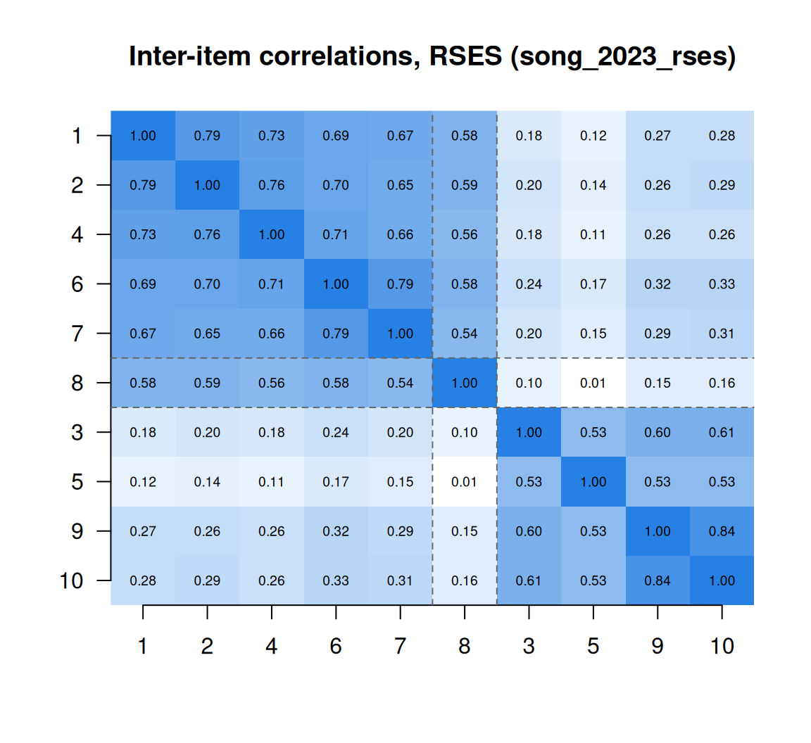

From construct map to items: building an instrument
What this is for
Most of the work of building an instrument happens before anyone answers it. Constructs and construct maps ended with a map or a blueprint; Classical test theory and reliability gave us tools for judging items once there are responses. This lesson sits between the two. It walks through the steps from a map to a pilot, gives the item-writing rules that carry the most weight, and spends most of its time on one design choice that looks harmless and isn’t: writing some items in the reverse direction. The worked example is the Rosenberg Self-Esteem Scale, answered by 1,238 medical students in China, where the reversed items form a second cluster and one of them appears to have been read the other way.
Goals
By the end of this lesson you should be able to:
- lay out the steps from a construct map or blueprint to a piloted instrument, and say what each step can catch that the others can’t;
- choose between selected-response and constructed-response formats for a construct, and say what each costs;
- spot and repair the item-writing faults that matter most (two ideas in one item, double negatives, unbalanced options, implausible distractors);
- explain why scales include reverse-worded items, and show how they can bring in a second, wording-related dimension that alpha does not reveal;
- read a pilot’s item analysis alongside the items’ text and decide whether to keep, rewrite or drop each item.
Core ideas
From a map to a pilot
That lesson took probes as given. Where do they come from? Wilson (2005) describes instrument building as a cycle, and the Standards treat much the same sequence as the core of test development (AERA, APA & NCME, 2014, ch. 4). In outline:
- Construct map or blueprint. What the instrument is for, and what a score should mean (Constructs and construct maps).
- Items. Written to the map’s levels, or to the blueprint’s cells.
- Review. Content experts check that each item belongs where it was written; others look for wording that some groups would find harder for reasons unrelated to the construct.
- Cognitive interviews. A handful of respondents answer the items aloud, saying what they took each to ask and how they arrived at an answer (Willis, 2005).
- Pilot. A larger sample answers the draft instrument, and we run an item analysis.
- Revise, and go round again.
Only steps 5 and 6 produce data, and every later lesson works on their output. Why bother with the rest? Tourangeau, Rips and Rasinski (2000) break answering a question into understanding the item, recalling what is relevant, forming a judgment, and fitting it to the response options. A pilot sees only the result. If everyone misreads an item in the same way, it can correlate well with the rest and still ask something we didn’t mean; a cognitive interview is where that shows up. And the blueprint fixes something no pilot can change: how many items each part of the domain gets.
Try it: a blueprint and its cells
A fractions test has three content areas and two kinds of task (recall, and applying to a new problem). Set its length and weights. Given the reliability of one item (last slider), the Spearman–Brown formula from Classical test theory and reliability gives the reliability of the whole test and of a score on each cell.
At the starting values the whole test reaches 0.84 while the three-item cells sit at 0.35. A blueprint can guarantee coverage without supporting a score for each cell; a subscore needs enough items in its cell, and that is settled before any item is written.
Formats: selected and constructed responses
What form should the response take? In a selected-response item the respondent picks from a list: multiple-choice options, or the steps of a Likert scale from “strongly disagree” to “strongly agree”. In a constructed-response item the respondent produces the answer: a typed number (the number-series items in Constructs and construct maps), a short answer, an essay.
Every model in this course needs each response to fall in exactly one of a fixed set of categories, usually ordered. A selected response arrives that way; a constructed response has to be put there by scoring, with a key or with a rubric and a rater. Scoring is where constructed responses get expensive, and the rater is a new source of error; Many sources of error treats raters as a facet of measurement. Selected response is a reasonable choice when recognition or judgment reaches the construct and many items are needed cheaply. Constructed response is a reasonable choice when producing the answer is the construct: writing, explaining a proof, carrying out a procedure.
Writing items
Guidance on writing items fills whole books, and it mostly agrees. Haladyna, Downing and Rodriguez (2002) distilled 31 guidelines for multiple-choice items from 27 measurement textbooks and 27 research studies and reviews; Haladyna and Rodriguez (2013) cover item development at book length; and Clark and Watson (2019) do the same for rating-scale instruments. A few rules do most of the work:
- One idea per item. An item that asks about two things (a double-barrelled item) leaves a respondent who agrees with one and not the other nowhere to go (Clark & Watson, 2019).
- No negatives stacked on negatives. A “not” in the stem makes the respondent do extra work; two of them invite errors that have nothing to do with the construct. Haladyna et al. (2002) advise wording the stem positively and, where a negative is needed, making it stand out.
- Options that fit the question. Response labels should cover the range the construct needs, in an order and spacing respondents can read. If most labels sit on one side of neutral, the middle option isn’t neutral.
- Plausible distractors. A multiple-choice distractor that nobody would choose adds only reading time. Distractors built from specific errors earn their place (Haladyna et al., 2002), and Nominal response and multiple-choice models shows that which distractor a respondent picks carries information of its own.
Try it: fix this item
Each item below breaks one rule. Decide what is wrong before you reveal the diagnosis and a rewrite. (The items are invented for this lesson.)
Each fault puts something between the respondent and the construct, and none need show in an item analysis: a double-barrelled item can correlate well with the rest, because respondents who like one of its two things tend to like the other.
Reverse-worded items
Here we write reversed items on purpose. Why? The usual answer is acquiescence, a respondent’s tendency to agree with statements whatever they say (Paulhus, 1991; Baumgartner & Steenkamp, 2001). If every item is worded so that agreeing means more of the construct, a respondent who agrees easily gets a higher score for reasons unrelated to the construct. If half the items are reversed, the extra agreement raises the forward items and, once keyed, lowers the reversed ones, and the two cancel in the sum.
Try it: agreeing with everything
Six hundred simulated respondents answer ten four-point items, each loading 0.6 on the trait. Each respondent also has a tendency to agree, added to their raw agreement with every item; the slider sets how much it varies between respondents. The two designs are an all-forward scale and a balanced one with five items reversed (and then keyed).
With no acquiescence the designs are alike (alpha 0.80 and 0.82). As the slider moves right, the all-forward scale’s alpha rises, because acquiescence is shared by every item and alpha counts anything shared as signal, while the trait’s share of the sum score falls, to 0.44 at the starting value. The balanced scale keeps the trait’s share near 0.8 and its alpha falls instead. The simulation assumes respondents read a reversed item as exactly the opposite of a forward one.
Do they? Not always. Marsh (1996), analysing the Rosenberg Self-Esteem Scale in a large US longitudinal study of school students, found that the negatively worded items shared a method effect beyond the general factor, and later studies modelled such effects for the same scale and others (Tomás & Oliver, 1999; DiStefano & Motl, 2006). Weijters, Baumgartner and Schillewaert (2013) model three mechanisms that can produce one: acquiescence, careless responding, and confirmation bias (reading a reversed item in the light of the items before it). Swain, Weathers and Niedrich (2008) found about a fifth of responses to reversed items landing on the same side of the scale as the forward items, and trace it to the extra work of checking a reversed statement against one’s belief. Whatever the mechanism, reversed items correlate more with each other than their content predicts, and wording direction becomes a second dimension.
Try it: a wording factor
The same ten items, keyed. Each loads 0.6 on the trait; the reversed items (R1–R5) also load on a wording factor unrelated to the trait, and a second slider gives the forward items (F1–F5) a wording factor of their own. The heat map is the correlation matrix for 600 simulated respondents.
At a reversed loading of 0 the matrix is one even block, with alpha 0.83 and the trait accounting for 0.83 of the sum score’s variance. At 0.6 the reversed items form their own block (0.65 among themselves, 0.32 with the forward items), alpha rises to 0.87, and the trait’s share falls to 0.69. Give the forward items a wording factor too and there are two blocks, alpha 0.90 and the trait’s share 0.59. The wording factor acts like the correlated errors that Classical test theory and reliability warned can push alpha above reliability. The second eigenvalue passing 1 is a first hint of the extra dimension; Factor analysis I explains eigenvalues and how to count dimensions with them.
Should a scale include reversed items, then? Including them assumes acquiescence is a large enough source of variance, for this population and format, to guard against; the first widget shows its cost. Treating them as plain opposites of the forward items assumes respondents read them that way; the second widget shows what happens when they don’t. Suárez-Álvarez et al. (2018), giving a self-efficacy test in forward, reversed and mixed forms, found lower reliability and extra variance in the mixed form. Weijters and Baumgartner (2012) review both sides, distinguish items reversed in meaning from items reversed by a negation, and recommend using reversed items with care. My own practice is this: I include reversed items when acquiescence is a real risk, as with agree–disagree formats and respondents who may answer quickly; I write them as opposites in meaning (“I am often bored”) rather than negations (“I am not often interested”); and I plan the analysis expecting a wording factor rather than hoping it away.
The pilot, and reading the items
The pilot’s item analysis uses the tools of Classical test theory and reliability: item means, item-rest correlations, alpha with each item removed. What this lesson adds is the reading. A weak item may be keyed backwards, measure something else, or be read in a sense we didn’t intend, and those call for different decisions: rekey, drop, rewrite. The number flags the item; the text and the cognitive interviews decide.
Two later lessons carry this further. Content review is the first kind of validity evidence in Gathering validity evidence, which picks up where steps 1 to 4 leave off. And an item can work well on average but differently for groups of respondents at the same level of the construct; Differential item functioning shows how to find such items.
Simulate
The code below generates ten four-point items from one trait, with a wording factor on the five reversed items, and prints the correlation matrix, alpha, the block averages, the largest eigenvalues, and the trait’s share of the sum score’s variance. It is base R and runs in a second.
With the seed as written (gamma <- 0.6), alpha is 0.87, the reversed items correlate 0.66 on average with each other and 0.33 with the forward items, the second eigenvalue is 1.17, and the trait accounts for 0.72 of the sum score’s variance. Set gamma <- 0 and alpha falls to 0.83 while the trait’s share rises to 0.82. Then set gamma <- 0.6 and gamma_f <- 0.6: alpha reaches 0.90, the second eigenvalue 1.95, and the trait’s share falls to 0.63. Keep that last setting in mind for the real data. Then try n <- 100: how noisy are the block averages in a small pilot?
Download this code to run it in your own R session.
With real data
Our table is song_2023_rses: the Rosenberg Self-Esteem Scale (Rosenberg, 1965) as answered by 1,238 medical students in China, in a study of anxiety about writing in English (Song et al., 2023; data CC BY 4.0). Its job is to be our pilot: five items worded for self-esteem and five against, so we can see what reverse wording does. Responses run from 1 to 4, and every respondent answered all ten items. Download the code; it needs only base R.
Code
# The IRW table, from the CSV link on its landing page (pinned to one version).
url <- "https://redivis.com/api/v1/tables/datapages.item_response_warehouse_3:v7_0.song_2023_rses/rows?format=csv"
df <- read.csv(url)
x <- tapply(df$resp, list(df$id, df$item), function(v) v[1])
x <- x[, paste0("RSES", 1:10)] # items in the order of the published scale
c(respondents = nrow(x), complete = sum(complete.cases(x)))respondents complete
1238 1238 Code
table(df$resp) # 1 to 4
1 2 3 4
355 2412 6592 3021 Code
# Rosenberg's wording: items 3, 5, 8, 9 and 10 are worded against self-esteem.
neg <- paste0("RSES", c(3, 5, 8, 9, 10))Rosenberg wrote items 3, 5, 8, 9 and 10 against self-esteem. Item 3, for example, is “All in all, I am inclined to feel that I am a failure” (wording from the scale as published by the University of Maryland Department of Sociology, which states that the scale is in the public domain). The respondents answered a Chinese version, so the English wording is the original the translation starts from, not what they read. Song et al. say the negatively worded items were reverse-scored. Are the stored responses already keyed?
Code
alpha <- function(m) { k <- ncol(m); k / (k - 1) * (1 - sum(apply(m, 2, var)) / var(rowSums(m))) }
# Summed as stored, the table gives the mean, SD and alpha Song et al. report
# (29.92, 4.79 and 0.863), so what we have are the authors' scored responses.
s <- rowSums(x)
sprintf("mean %.2f, SD %.2f, alpha %.3f", mean(s), sd(s), alpha(x))[1] "mean 29.92, SD 4.79, alpha 0.863"Code
# If items 3, 5, 9 and 10 had *not* been reversed, alpha would be far lower:
flip <- function(m, items) { m[, items] <- 5 - m[, items]; m }
sprintf("alpha with items 3, 5, 9 and 10 un-reversed: %.3f", alpha(flip(x, paste0("RSES", c(3, 5, 9, 10)))))[1] "alpha with items 3, 5, 9 and 10 un-reversed: 0.658"Summed as stored, the table reproduces the mean, SD and alpha Song et al. report (29.92, 4.79 and 0.863), and un-reversing items 3, 5, 9 and 10 drops alpha to 0.658. So the table holds the authors’ scored responses, and on those four items higher means more self-esteem. Item 8 we come back to.
Code
item_rest <- sapply(colnames(x), function(i) cor(x[, i], rowSums(x[, colnames(x) != i])))
data.frame(mean = round(colMeans(x), 2), item_rest = round(item_rest, 2),
worded = ifelse(colnames(x) %in% neg, "against", "for"))| mean | item_rest | worded | |
|---|---|---|---|
| RSES1 | 3.1 | 0.64 | for |
| RSES2 | 3.1 | 0.65 | for |
| RSES3 | 2.8 | 0.50 | against |
| RSES4 | 3.1 | 0.63 | for |
| RSES5 | 2.5 | 0.41 | against |
| RSES6 | 3.1 | 0.69 | for |
| RSES7 | 3.1 | 0.64 | for |
| RSES8 | 3.2 | 0.47 | against |
| RSES9 | 2.9 | 0.63 | against |
| RSES10 | 3.0 | 0.64 | against |
Every item-rest correlation is between 0.41 and 0.69. By the standard of Classical test theory and reliability, where 24 of the 30 reading items reached 0.40, the scale hangs together, and an item analysis would stop here. But as one set, or as two?
Code
r <- cor(x)
pos <- paste0("RSES", c(1, 2, 4, 6, 7))
neg4 <- paste0("RSES", c(3, 5, 9, 10)) # the negatively worded items other than 8
mean_r <- function(a, b) { v <- r[a, b]; if (identical(a, b)) mean(v[upper.tri(v)]) else mean(v) }
round(c(within_positive = mean_r(pos, pos), within_negative = mean_r(neg4, neg4),
across = mean_r(pos, neg4)), 2)within_positive within_negative across
0.71 0.61 0.23 Code
round(range(r[pos, neg4]), 2)[1] 0.11 0.33Code
ord <- c(pos, "RSES8", neg4)
image(1:10, 1:10, r[ord, rev(ord)], zlim = c(0, 1), axes = FALSE, xlab = "", ylab = "",
col = colorRampPalette(c("white", "#2780e3"))(50),
main = "Inter-item correlations, RSES (song_2023_rses)")
axis(1, 1:10, sub("RSES", "", ord)); axis(2, 1:10, sub("RSES", "", rev(ord)), las = 1)
text(rep(1:10, 10), rep(1:10, each = 10), sprintf("%.2f", r[ord, rev(ord)]), cex = 0.6)
abline(v = c(5.5, 6.5), h = c(4.5, 5.5), lty = 2, col = "grey40")
Code
round(eigen(r)$values[1:3], 2)[1] 4.89 2.32 0.55Two blocks, as in the simulation with wording factors on both sets of items, but sharper: 0.71 and 0.61 within, 0.23 across, and a second eigenvalue of 2.32, above any of the simulation’s settings. Marsh (1996) reported the same pattern for this scale in a very different population. Are the blocks one construct seen through two wordings, or two constructs (feeling good and feeling bad about oneself)? The correlations alone can’t say; problem 6 takes it up, and Factor analysis II gives the models.
Now item 8. Rosenberg wrote it against self-esteem: “I wish I could have more respect for myself” (UMD Department of Sociology). In the heat map it sits with the positive items, not the negative ones.
Code
# Item 8 was written against self-esteem. Where does it sit?
round(rbind(with_positive = range(r["RSES8", pos]), with_negative = range(r["RSES8", neg4])), 2) [,1] [,2]
with_positive 0.54 0.59
with_negative 0.01 0.16Code
table(x[, "RSES8"]) # how the stored values are spread
1 2 3 4
14 96 798 330 Code
# Reversing item 8 as stored would put it at odds with every other item:
sprintf("alpha as stored %.3f; with item 8 reversed %.3f", alpha(x), alpha(flip(x, "RSES8")))[1] "alpha as stored 0.863; with item 8 reversed 0.793"Item 8 correlates 0.54 to 0.59 with the positively worded items and 0.01 to 0.16 with the other negatively worded ones. Its stored values rise with self-esteem, so it points the right way for the sum: reversing it would drop alpha from 0.863 to 0.793. But it doesn’t share the wording factor the other four negatively worded items share. Why not?
The likeliest answer is the translation. Peng et al. (2024) report that in the Chinese version of the scale item 8 is understood in a positive sense, and so is scored as a positively worded item. Read that way the item isn’t reversed at all, and respondents who think well of themselves agree with it; here 798 + 330 = 1,128 of the 1,238 stored responses are 3 or 4. The IRW’s own check of this table’s item text reaches the same reading (verify_song_2023_rses.R). Song et al. list item 8 among the negatively rated items, following Rosenberg, while the stored scores appear to follow the Chinese version. That is a question of documentation, not a fault in the data, which reproduce the published results exactly. And the data can’t settle it: whether a stored 4 means “strongly agree” or “strongly disagree”, every correlation is the same, and only the wording respondents read says which. The respondent answers the item they read, not the item we wrote.
Problems
- Two factors in a correlation. Let each keyed item be \(y_i = \lambda f + \gamma_i w + e_i\), with trait \(f\) and wording factor \(w\) of variance 1, everything uncorrelated, \(\gamma_i = \gamma\) for reversed items and 0 otherwise, and \(\text{Var}(y_i) = 1\). Derive the correlation between two forward items, two reversed items, and one of each. What \(\lambda\) and \(\gamma\) would the RSES block averages (0.71, 0.61, 0.23) need? What goes wrong, and what does that suggest?
- Alpha if deleted. Compute alpha for the RSES with each item removed in turn. Which item’s removal raises alpha? Read its wording on the UMD page: does anything about how it is worded suggest why? Would you drop it, and does your answer depend on what the scale is used for?
- Choose a format. For a construct of your choice, sketch one selected-response and one constructed-response item. For each, what does it cost to write, to administer and to score? What would a rater have to decide, and how could two raters disagree?
- Write six items. Take the construct map you drew in Constructs and construct maps (its problem 4), or draw one. Write six rating-scale items for it, two of them reverse-worded as opposites in meaning rather than negations. For each, say which level of the map it targets and which item-writing rules it follows.
- A cognitive interview. Choose two of your items from problem 4, one of them reversed. Write the questions you would ask in a cognitive interview to find out whether respondents read them as intended. What answer would make you rewrite the reversed item?
- Challenge: nuisance or construct? Is the RSES’s second dimension a nuisance of wording, or a real distinction between feeling good about oneself and feeling bad about oneself? Marsh (1996) proposes ways to test this. What data would decide it: a translation experiment, a version with every item worded positively, relations with other variables, change over time? This is open.
Going further
- Wilson, M. (2005). Constructing measures: An item response modeling approach. Lawrence Erlbaum. https://doi.org/10.4324/9781410611697. The cycle from construct map to items to a measurement model, at book length.
- Haladyna, T. M., & Rodriguez, M. C. (2013). Developing and validating test items. Routledge. https://doi.org/10.4324/9780203850381. Item formats and item writing for tests, with the research behind the guidelines.
- Haladyna, T. M., Downing, S. M., & Rodriguez, M. C. (2002). A review of multiple-choice item-writing guidelines for classroom assessment. Applied Measurement in Education, 15(3), 309–333. https://doi.org/10.1207/S15324818AME1503_5. The 31 guidelines, and where each comes from.
- Clark, L. A., & Watson, D. (2019). Constructing validity: New developments in creating objective measuring instruments. Psychological Assessment, 31(12), 1412–1427. https://doi.org/10.1037/pas0000626. Developing rating-scale instruments, updating Clark & Watson (1995).
- Willis, G. B. (2005). Cognitive interviewing: A tool for improving questionnaire design. Sage. https://doi.org/10.4135/9781412983655. How to run cognitive interviews, and what they turn up.
- Tourangeau, R., Rips, L. J., & Rasinski, K. (2000). The psychology of survey response. Cambridge University Press. https://doi.org/10.1017/CBO9780511819322. What a respondent does between reading a question and answering it.
- Weijters, B., & Baumgartner, H. (2012). Misresponse to reversed and negated items in surveys: A review. Journal of Marketing Research, 49(5), 737–747. https://doi.org/10.1509/jmr.11.0368. The case for and against reversed items, with recommendations.
- Marsh, H. W. (1996). Positive and negative global self-esteem: A substantively meaningful distinction or artifactors? Journal of Personality and Social Psychology, 70(4), 810–819. https://doi.org/10.1037/0022-3514.70.4.810. The wording factor in the RSES, and how to ask what it is.
- Weijters, B., Baumgartner, H., & Schillewaert, N. (2013). Reversed item bias: An integrative model. Psychological Methods, 18(3), 320–334. https://doi.org/10.1037/a0032121. Acquiescence, carelessness and confirmation bias as sources of the wording factor, in one model.
- Peng, W., Zhou, Y., Chu, J., Liu, Z., Zheng, K., Yao, S., & Yi, J. (2024). Factorial and criterion validities of the Chinese version of Rosenberg Self-Esteem Scale among undergraduate students. Psychology Research and Behavior Management, 17, 4135–4144. https://doi.org/10.2147/PRBM.S494452. The Chinese RSES, including how item 8 is scored.
Data sources
Data from the Item Response Warehouse (each table name links to its IRW page); references from IRW biblio.
song_2023_rses: Song Y, Sznajder K, Bai Q, Xu Y, Dong Y, Yang X (2023). English as a foreign language writing anxiety and its relationship with self-esteem and mobile phone addiction among Chinese medical students-A structural equation model analysis. PLOS ONE, 18(4), e0284335. https://doi.org/10.1371/journal.pone.0284335. Licence: CC BY 4.0.
For instructors
- Source: EDUC 252 class 2 (slides c2, “Constructs to items” and “Items & responses”, slides 18–25). The point that every response must end up in a fixed set of ordered categories comes from the slides, in new words; the item-writing rules, the reverse-wording material and the RSES analysis are new.
- Timing: about 40 minutes for the core ideas and widgets; the RSES analysis works as a 20-minute lab. Problems 4 and 5 work as a small-group activity, with partners interviewing each other.
- Held back: raters and constructed-response scoring (in Many sources of error); wording direction as a dimension, modelled (in Factor analysis I, Factor analysis II and Dimensionality and multidimensional IRT); response styles such as acquiescence and extreme responding, modelled (in IRTree models); distractors as information (in Nominal response and multiple-choice models); item features that predict difficulty (in What is an item?); content evidence (in Gathering validity evidence); items that work differently across groups (in Differential item functioning).
- Item text: the RSES is in the public domain according to the University of Maryland Department of Sociology, which publishes it. The lesson still quotes only items 3 and 8, the two the argument needs. The Chinese wording respondents saw is in the IRW’s item-text table (Redivis login needed) and is not reproduced.
- Solutions: held back in
solutions/instrument-building.qmd(not published). Problem 6 is open.